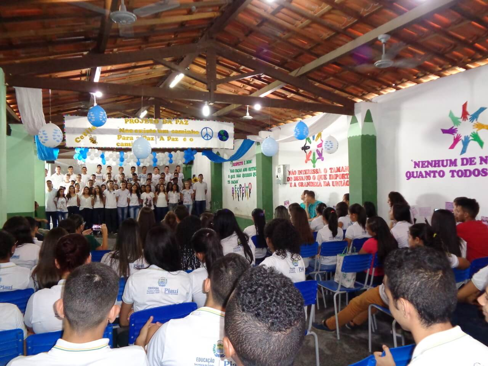

EVENTOS - ABRIL
Projeto da Paz

Ao dia 29/04, foi realizado o Projeto da Paz, com o tema: Não existe um caminho para a paz, a paz é o caminho, organizado pelos Líderes de Turma, visando a promoção da paz, tanto no meio escolar como no meio social, em que os alunos da instituição apresentaram, por meio de diversas formas, os seustalentos e o protagonismo presente em cada um. A introdução ficou sobre a responsabilidade de Thamires e Marcia Valéria, que apresentaram o projeto. Logo mais, o Teatro entrou em cena, este organizado por Caíque Abel e Bianca, que representou uma adaptação do Auto da Barca do Inferno. Em seguida, foi a vez dos nossos dançarinos demonstrarem o seu talento ao som de “All Day” do grupo pop internacional NOW UNITED, organizado pelos alunos Ian e João Lucas. Na sequência, o coral se apresentou cantando a música “A Paz” do Roupa Nova, uma adaptação da música “Heal the World” do Michael Jackson. Depois disso, foi a vez das alunas Alice Éllen e Valdirene apresentarem a exposição de artes sobre o tema em questão, que apresentaram novos jovens prodígios na arte para a nossa escola. Concluindo o projeto, Tamires e Ian apresentaram os dados estatísticos sobre como esta nosso âmbito escolar, nos quesitos bullying e inclusão dos alunos.
Um por todos e todos contra o bullying!
No dia 12/04 o Grêmio Estudantil protagonizou um dia cheio de atividades extras e construtivas, em que os alunos mais uma vez mostraram o seu brilhante protagonismo estudantil, em parceria com os professores, por meio da executaram de um lindo projeto acerca do bullying, no qual foram apresentadas uma palestra com o psicólogo Anderson, uma peça teatral, em que houve uma interação com alunos apresentando de forma cômica o bullying em uma sala de aula. Além disso, com uma grande ideia da professora Lizier, alguns alunos epais de alunos, puderam dar seus depoimentos sobre suas vivências acerca desse ato. Por fim, foram apresentados vídeos e um filme para que todos tivessem conhecimento e ideia das consequências que essa prática pode causar a vítima. Além disso, no início do dia, foi apresentado os primeiros alunos estrelas do ano. Esse projeto tem como objetivo aumentar o empenho dos alunos em conquistar êxito nas suas atividades escolares.